Technical blog · AIMon (Bessemer-backed)
Re-Prompting: a smarter loop for smarter models
What if your LLM could rewrite its own answers until it got things right — automatically?
Overview
Anyone who’s worked with LLMs knows the drill. You give a model a prompt with specific instructions and still, the response comes back missing something. So you tweak the prompt and try again — fix the tone, then rephrase for conciseness. Eventually you get what you need, but only after multiple rounds.
Re‑prompting automates that loop. Instead of relying on massive models with high latency or manually fine-tuning outputs, we introduce a lightweight, stateless system that sits on top of any black-box LLM. Using AIMon’s Instruction Following Evaluation (IFE) model to give precise feedback, our system generates a targeted corrective prompt to extract better outputs.
In this blog, we walk through:
- How the re-prompting loop works
- How it performs across model sizes and vendors — how small models (3–24B parameters) can rival GPT-4o
- Which types of instructions this system fixes best, and where it still struggles
Goals
Our system is designed to:
- Boost instruction adherence
- Minimize hallucinations
- Flag and fix toxicity
- Stay fast and token‑efficient
- Keep all models stateless for scalability
How it works: the re-prompting loop
Think of the system as an editorial feedback loop for LLM responses. On each pass, the original draft is reviewed and returned with targeted feedback to fuel iterative improvement until it converges on an error-free output. Each iteration can optionally log a JSON blob of diagnostics, giving full transparency into how the model evolves with each re-prompt.
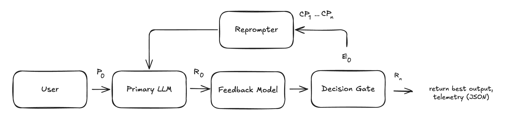
Step 1 — Draft the initial response (P₀ → R₀)
The user sends a query, context, and instructions to a stateless LLM, which generates a response that may fail to fully comply with the provided instructions — especially the critical ones.
Step 2 — Audit with the feedback model (R₀ → E₀)
While the base LLM focuses on creation, we use AIMon’s IFE model to focus on correction. IFE runs 10× faster than the LLM thanks to its compressed output representation, and returns a structured error report with (a) the instruction, (b) a follow probability (FP), and (c) a natural-language explanation. We used it to assess three things:
Groundedness — factual consistency: whether a response stays faithful to the input context and avoids hallucinations or speculative reasoning.
Context: “The Eiffel Tower is located in Paris, France. It was completed in 1889.”
Generated: “The Eiffel Tower, located in Berlin, France, was completed in 1890.”
Instruction adherence — whether a response follows the provided or implied instructions (formatting constraints, tone specifications, and so on).
Query: “Summarize the plot of The Lion King.” Instruction: “Use bullet points.”
Generated: “The Lion King is about Simba, who flees after his father dies. Later, he comes back to defeat Scar…” (a paragraph, not bullets)
Toxicity — whether a response contains harmful, unsafe, or offensive language.
The feedback model only ever sees the current draft, enabling safe, horizontal scaling with no cross-session leakage.
Step 3 — Generate a corrective prompt (Eₙ → Pₙ)
We embed IFE’s targeted feedback in a Corrective Prompt (CP). The CP has to balance clarity and brevity: too terse and the model misses nuance; too verbose and we waste tokens or confuse smaller models. Because the LLM is stateless, the CP re-states background like the query. We used the following structure:
# Corrective Prompt template Revise your previous response to this query: [user query] Context: [context] Previous response: [generated text] # tone scales with error severity if failed_instructions >= 3: "Your reply had major issues. Fix all points below." elif failed_instructions >= 2: "Some parts were off. Improve using the notes below." else: "Almost there! Just a few small fixes needed." Fix the following: 1. We are [1 - FP] confident this instruction was not followed: → Violated instruction: [instruction] → Explanation: [explanation] ... Preserve correct content. Return only the revised output. You did well on these — keep following them: [followed instructions] # FP = follow probability (IFE's confidence an instruction was adhered to)
Design considerations:
- Tone adjustment — the tone becomes stricter as error severity rises.
- Divulge follow confidence — revealing IFE’s follow probabilities clarifies how sure we are about each violation, preventing overcorrection.
- Prioritized ordering — violations are sorted by increasing follow probability, targeting the most certain and critical issues first.
- Targeted feedback — IFE’s explanations guide precise revisions.
Step 4 — Iterative refinement (P₁ → R₁ … Pₙ → Rₙ)
We repeat steps 2–4 until we either:
- Hit a maximum of N iterations (default: 3), or
- Achieve a clean run — no hallucinations, toxic content, or broken instructions (follow probability ≥ 0.5 for each instruction and for groundedness, and toxicity < 0.25).
To pick the best draft, we score each with a residual error metric that weights the worst mistakes more heavily. A score near 0 means high quality; near 1 means poor instruction-following. Per instruction:
- If follow probability ≥ 0.5 → penalty = 0
- If follow probability < 0.5 → penalty = 2 × (1 − p)
Residual error is the average of all penalties across groundedness and instruction adherence. Once the loop exits, the draft (R₀…R₃) with the fewest failed instructions is surfaced — ties broken by the lowest residual error. The result? Ideally, a fully instruction-adherent output. But does it actually deliver? Let’s find out.
Dataset details
To test the workflow, we assembled a 1,000-sample dataset of customer-support use cases across bureaucratic, legal, and technical domains — stress-testing instruction-following on complex, rule-heavy contexts. We hand-curated 25–50 seed samples and scaled up with AIMon’s Data Foundry tool. Each sample has:
- Context — a document about company/topic policy, history, or rules, sourced from real-world materials: company policies (Apple, Amazon), regulations (DMV, student aid, health insurance — via doc2dial), financial platforms (Robinhood), and technical docs (Metaflow, Ray).
- Query — a user question related to the context.
- Instructions — 20 per sample, a mix of user-written and AIMon-provided.
To evaluate performance across instruction types, we gave each sample a fixed number per category:
- User-simulated: tone (2), format (1), content requirements (2), brand reputation (1), completeness (2), conciseness (1).
- AIMon-provided: groundedness (5) and toxicity (6) — each metric spans several instructions evaluating different aspects.
To keep data quality high, a panel of three LLM judges (GPT-4o, Llama 3.3 70B Instruct Turbo, Claude Opus 4) scored each sample 1–10 per metric, with a majority vote for the final score. We filtered all 1,000 samples on instruction relevance (clear, specific, actionable?) and instruction compatibility (followable without conflict?), keeping scores > 6. We then sampled 100 (10%) for deeper evaluation of context–query relevance and context quality:
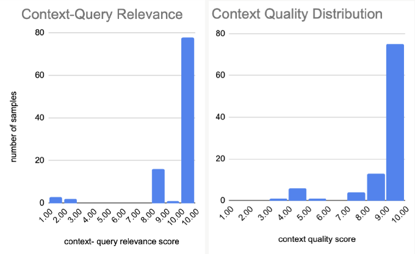
We also quantified the difficulty of answering each query while following all instructions, using Llama 3.3 70B Instruct Turbo to assign a difficulty score. We deliberately avoided larger models like GPT-4o here, because they tend to underestimate difficulty for the smaller models we’re re-prompting.
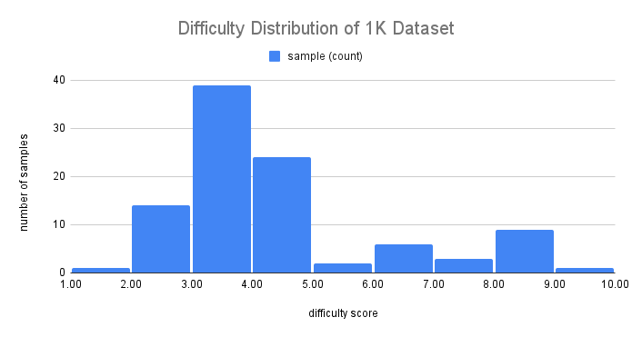
Later we built a 100-sample “difficult set” by using Data Foundry to expand samples that required re-prompting. Below, red bars show this hard set versus 100 random samples from the original 1K (blue). As expected the hard set skews higher — but some low-scored samples (even difficulty 2) still caused failures, a reminder that assigned difficulty doesn’t always match real model struggle.
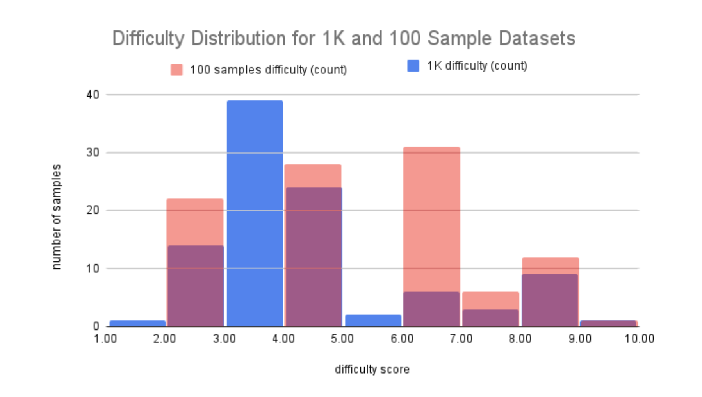
Results
Did re-prompting work?
We ran the 1K dataset across several models and tracked their instruction-following rate — the share of samples whose final draft satisfied all instructions — before and after re-prompting. As a baseline, we ran the same samples on GPT-4o with no re-prompting (the green dashed line).
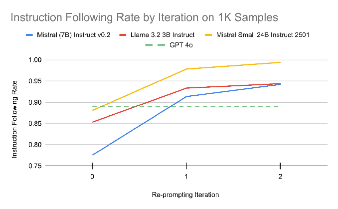
To validate, the same three judges soft-checked 20 re-prompted samples per base LLM (those marked fully adherent). The panel largely confirmed IFE’s assessments — only a 4% disagreement rate, mostly on subjective metrics like conciseness and completeness. Even at ±4%, re-prompting has a distinctly positive effect on adherence.
We then ran the 100-sample difficult set, again with GPT-4o as the baseline — and also tried re-prompting on GPT-4o (green), which improved rapidly after a single iteration, confirming the samples are solvable. To test reproducibility, we ran Qwen 7B twice (blue and orange) and saw nearly identical start and post-re-prompting adherence, suggesting stable, repeatable results even on small models.
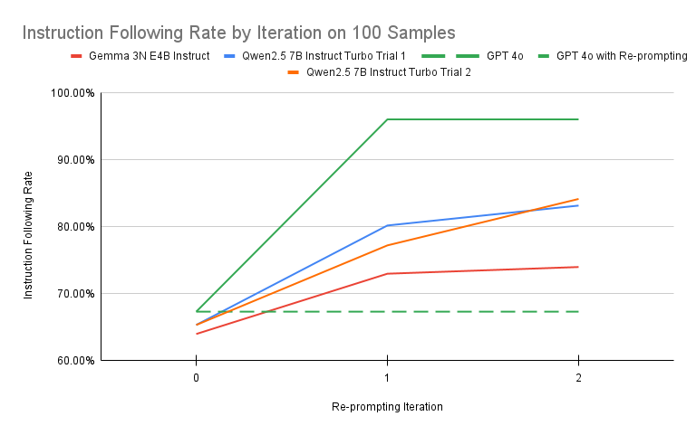
We also measured average iterations to convergence — how many rounds it took to reach a fully adherent draft. Across models this landed between 1 and 2, with the harder set needing a bit more:
| Mistral 7B Instruct v0.2 | Llama 3.2 3B Instruct | Mistral Small 24B Instruct 2501 | Gemma 3N E4B Instruct | Qwen2.5 7B Instruct Turbo |
|---|---|---|---|---|
| 1.33 | 1.23 | 1.15 | 1.64 | 1.55 |
Want to see it in motion? Here’s an example re-prompting flow →
Instruction-level analysis
To see where re-prompting helped most, we measured the fix rate per instruction type — the share of initially-violated instructions later satisfied.
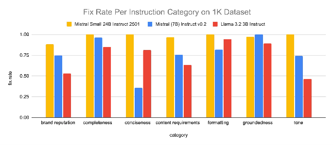
Breaking it down per model — the share of each instruction type that adhered initially, adhered after re-prompting, and failed despite it (note the 85–100% scale):
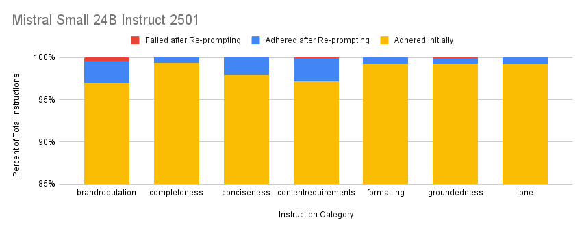
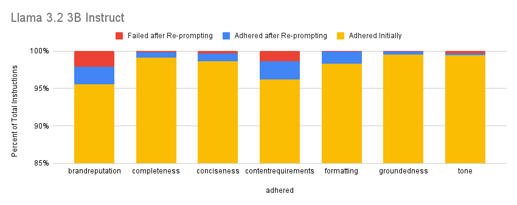
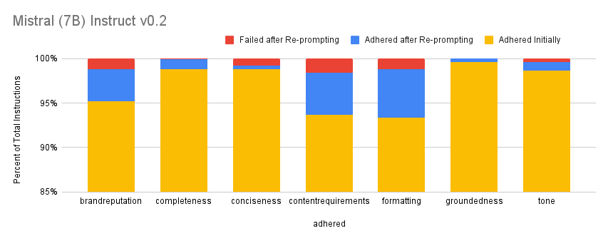
Content-requirement instructions (e.g. “include a clear recommendation based on the context”) and brand-reputation ones (e.g. “avoid vague or speculative phrases like ‘I think we cover that’”) had the highest failure rates — re-prompting helped, but they stayed harder to fix. Formatting violations, though common, were corrected reliably.
We also tracked the break rate — instructions initially followed but later broken after re-prompting:
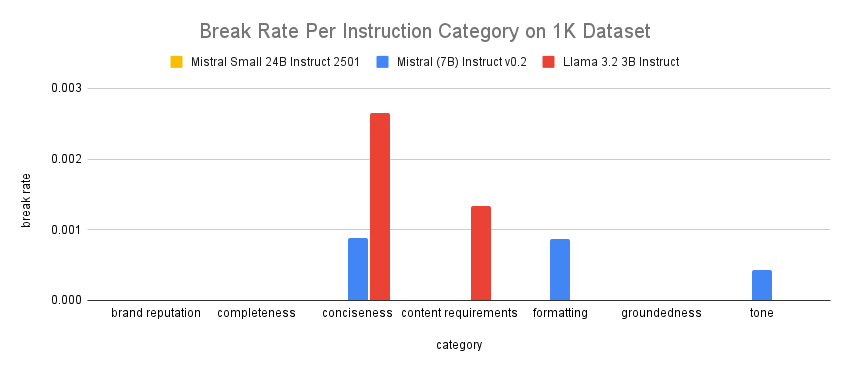
Latency
Interesting results — but how practical is it? Below is average end-to-end latency (95% CI) with and without the pipeline. The “after” values average over all queries, including those resolved on the first pass.
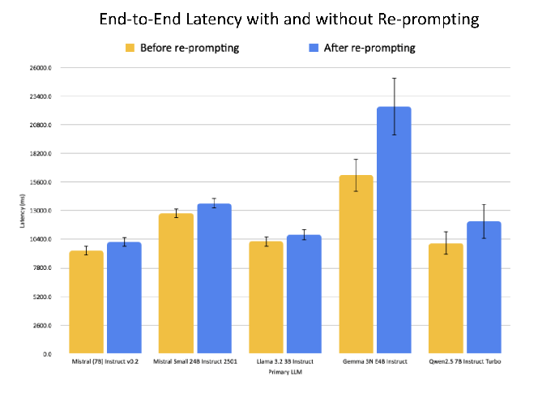
For models like Mistral 24B that need little re-prompting, the added latency is small. Models like Gemma 4B, which need more rounds, cost more. But because many queries adhere on the first pass, the impact on large-scale workloads is muted — and the overlapping confidence intervals make the added latency statistically negligible across many LLM calls.
Limitations
Re-prompting’s effectiveness depends heavily on the quality of the original instructions — they must be clear, deterministic, and realistically followable; vague or contradictory guidance can’t be reliably corrected. Subjective dimensions like tone or conciseness improve inconsistently and are hard to quantify. And there’s a real quality-versus-speed tradeoff to weigh, especially for real-time or cost-sensitive applications.
Conclusion
Ultimately, re‑prompting boosted instruction-following by ~22% on average — and let small, stateless models rival GPT-4o. If you want to try it yourself, check out AIMon’s open-source framework and API to drop re-prompting into your own workflows.
Want to build on it?